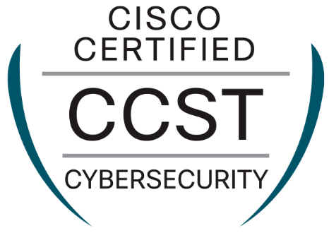

Cisco Certified Support Technician (CCST) — 2025
Certificación orientada a soporte IT y fundamentos técnicos (redes, troubleshooting y buenas prácticas).


Soy Joaquín Luis García García y actualmente estudio Administración de Sistemas Informáticos en Red (ASIR) en Prometeo. Tras varios años enfocado en la comunicación y redacción, he dado un giro hacia el ámbito IT ya que me entusiasma el trabajo con sistemas, redes y seguridad: entender cómo encaja todo, detectar fallos y resolverlos.
Complemento esta formación con un máster de especialización, en el que, durante el primer año, tocamos varias áreas como Javascript, Python o bases de datos. Ya en el segundo año, mi intención es especializarme en ciberseguridad, un ámbito muy interesante del que intento aprender por mi cuenta. De esta forma obtuve las certificaciones Cisco Certified Support Technician (CCST) y IT Specialist — Cybersecurity de Cisco.
Además, tengo experiencia real en montaje y mantenimiento de ordenadores, incluido el ensamblaje completo de mi propio equipo, así como la renovación y cuidado de otros ordenadores y máquinas. Para finalizar, creo que gracias a mi paso por el mundo de la información, en IT puedo aportar comunicación clara, buena documentación y trato profesional.
Puedes descargar mi currículum completo aquí: Descargar CV en PDF
Certificación orientada a soporte IT y fundamentos técnicos (redes, troubleshooting y buenas prácticas).
Certificación centrada en fundamentos de ciberseguridad, concienciación y conceptos clave del entorno empresarial.
- En curso · Prometeo
- En curso · Prometeo
- · Universidad Rey Juan Carlos
- · Universidad de Almería
Progreso en ASIR y formación técnica:
Proyecto personal · Selección de componentes, montaje, pruebas y optimización.

Durante el proceso, elegí yo mismo los componentes para luego ensamblarlos. Tras el montaje y gestión del cableado, instalé el SO, actualicé drivers y verifiqué temperaturas y rendimiento, dando como resultado una máquina potente y estable, compuesta por un Ryzen 5900X y una RT 7800 XT.
Prácticas de clase · HTML y CSS.

Tras aplicar los conocimientos adquiridos en clase, me decidí a realizar un portfolio divertido ambientado en Star Wars. En este enlace se puede visitar el portfolio. También en mi Github personal
Proyecto personal · Limpieza y renovación de materiales.

Tras unos años de buen rendimiento, el portátil Asus TUF gaming F15 modelo FX506HCB-HN200 comenzó a dar ciertos síntomas de fatiga. Por ello, me animé a realizar una puesta a punto. Dupliqué la memoria RAM con dos módulos nuevos, añadí un disco duro M.2 más rápido y sustituí la batería por una con más capacidad. También cambié la pasta térmica, ya que había sufrido pantallazos azules debido al sobrecalentamiento que estaba padeciendo. Como resultado, ahora disfruto de un portátil más rápido y más potente que no se apaga por el calor.
Proyecto personal · Cambio de pantalla.

Después de cuatro años, la pantalla de mi Nintendo Switch comenzó a fallar, mostrando líneas y parpadeos. Ya que la reparación en un soporte técnico era demasiado cara, decidí comprar una pantalla por mi cuenta. Tras desmontar cuidadosamente la consola, reemplacé la pantalla dañada y volví a montar todo. También renové la pasta térmica. Ahora la consola funciona perfectamente, como el primer día.
— · Almería (España)
— · Remoto
— · Remoto
Disponible para prácticas / junior y proyectos.
Almería, España